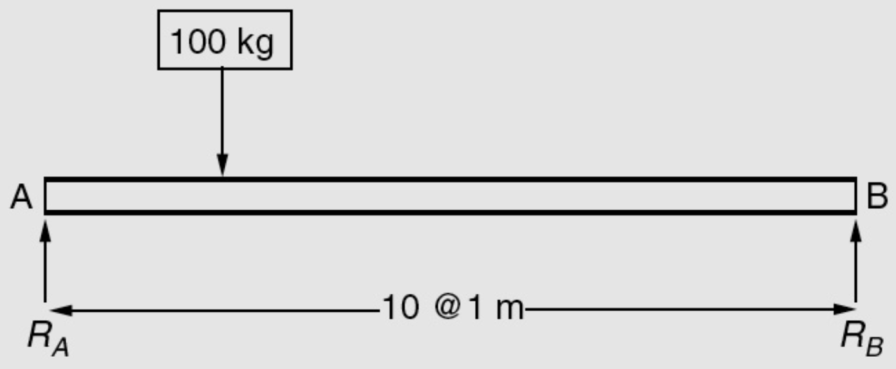

An experiment that can result in different outcomes, even though it is repeated in the same manner every time
Noise variables affect transformation of inputs to outputs
A contractor needs to acquire bulldozers for a new project and from prior experience knows that there is a 50% chance that each bulldozer will remain operational for at least 6 months. If they purchased 3 bulldozers, what is the probability that there will be only 1 bulldozer that is operational after 6 months?
The set of all possible outcomes of a random experiment is called the sample space of the experiment, denoted as \(S\)
Consider measurements of the recycle time of a flash for a camera:
An event is a subset of the sample space of a random experiment
 \(10 \leq R_A \leq 20\,\mathrm{kg}\)
\[(E')' = E\]
\[E \cup E' = S\]
Mutually exclusive intersection \[A \cap B = \emptyset\]
\[E \cap E' = \emptyset\]
\[A \cup A = A\] \[A \cap A = A\]
\[A \cup S = S\] \[A \cap S = A\]
\[A \cup B = B \cup A\] \[A \cap B = B \cap A\]
\[(A \cup B) \cup C = A \cup (B \cup C)\] \[(A \cap B) \cap C = A \cap (B \cap C)\]
\[(A \cup B) \cap C\]
\[(A \cap C) \cup (B \cap C)\]
\[(A \cup B) \cap C = (A \cap C) \cup (B \cap C)\] \[(A \cap B) \cup C = (A \cup C) \cap (B \cup C)\]
For two sets (or events) \(E_1\) and \(E_2\)
\[(E_1 \cup E_2)' = E_1' \cap E_2'\]
\[(E_1 \cup E_2)'\]
\[E_1' \cap E_2'\]
\[(E_1 \cup E_2 \cup ... \cup E_n)' = E_1' \cap E_2' \cap ... \cap E_n'\]
\[(E_1' \cup E_2' \cup ... \cup E_n')' = E_1 \cap E_2 \cap ... \cap E_n\]
\[(E_1 \cap E_2 \cap ... \cap E_n)' = E_1' \cup E_2' \cup ... \cup E_n'\]
The direction of wind at a site is between due East (\(\theta=0^{\mathrm{\circ}}\)) and due North (\(\theta=90^{\mathrm{\circ}}\)). The wind speed \(V\) can be any positive value.
Message delay example
Total number of events for a set of discrete steps \(k\), each with \(n\) number of events, can be calculated as \[n_1 \times n_2 \times ... \times n_k\]
The number of ordered sequences of the elements of a set
\(S\) = {a, b, c} will have \(abc\), \(acb\), \(bac\), \(bca\), \(cab\), and \(cba\)
The number of permutations of \(n\) different elements is \(n!\) \[n! = n \times (n-1) \times (n-2) \times ... \times 2 \times 1\]
Number of arrangements of only some elements of the set
The number of permutations of subsets of \(r\) elements selected from a set of \(n\) elements \[P_r^n = n \times (n-1) \times (n-2) \times ... \times (n-r+1) = \dfrac{n!}{(n-r)!}\]
The number of subsets of \(r\) elements from a set of \(n\) elements when order is not important
\[C_r^n = \binom n r = \dfrac{n!}{r!(n-r)!}\]